Controls Lead + Brakes & Pedalbox RE: May 2023 - June 2024
Powertrain + Controls General Member: September 2022 - May 2023
UCLA's Bruin Formula Racing is a student-led engineering group that participates in the global Formula SAE competition. The competition challenges teams to develop a formula-style racecar from the ground up, which then competes in both static and dynamic events at multiple competitions annually. By taking part in this project, students face complex engineering obstacles, providing them with valuable hands-on experience and knowledge that prepares them for real-world engineering challenges.
Currently, I am serving as the team's first Software Lead, overseeing the development of our car's control systems and custom data acquisition software. Last year, I served as the team's Controls Lead, overseeing a team of 6 engineers performing the design, analysis, manufacturing, and testing of the car's brakes, ergonomics, and safety subsystems for Mk. IX, our first electric vehicle. I was also responsible for designing the car's pedalbox and braking system. As a general member my freshman year, I led the engine tuning and testing process for two of our cars, Mk. VII and Mk. VIII, improving our car's overall power and helping us secure a 10th place finish out of 120 teams at the May 2023 FSAE IC competition.
Racing Simulator
As a new member, my first design project was redesigning the racing simulator in our shop, which was built using the chassis of our 2018 car. The simulator had a list of problems that needed fixing and upgrades that needed to be implemented, including improving ergonomics, adding adjustability, improving chassis component integrity, and overall safety.
My primary goal was to enhance the simulator’s ergonomics, making it comfortable for extended use, while also improving its adjustability to accommodate users of various heights. Additionally, I aimed to reinforce the chassis components, ensure overall safety, and add some quality of life upgrades.
Key Improvements:
Adjusted the pedalbox angle and steering wheel crossbeam position reduce back pain and ankle strain during prolonged use
Added a slider to the seat, allowing users between 5’0” and 6’4” to comfortably reach the pedals
Reinforced mounting points, removed sharp tabs, and covered the ends of tubes and 80/20 extrusion with caps to enhance structural integrity and safety.
I manufactured and assembled all the necessary parts to implement these upgrades. After completing the upgrades, the simulator saw a significant increase in usage. The team successfully ran a full 24-hour endurance race during our yearly buildathon, and the simulator was used for Mk. VIII driver tryouts and training. The improvements in ergonomics, adjustability, and safety allowed for a more comfortable and accessible experience for all users.
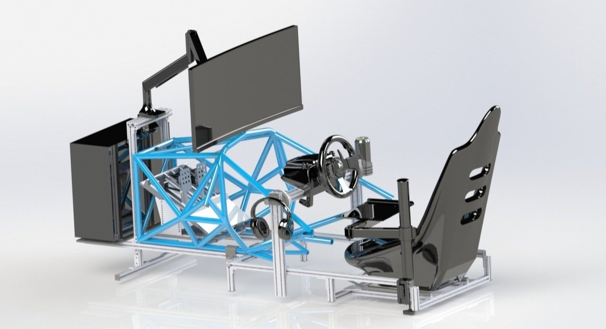
The simulator, redesigned using SOLIDWORKS
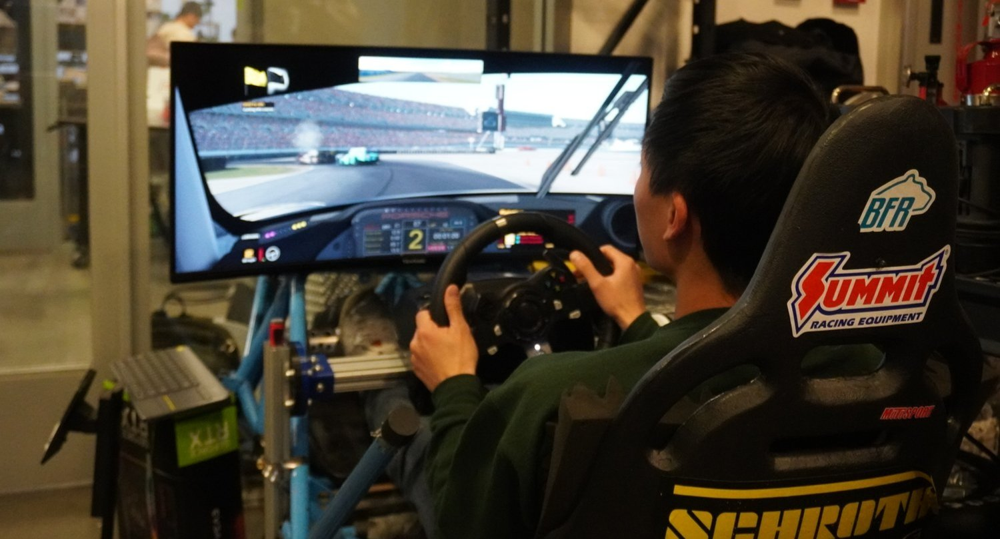
A team member using the simulator during the 24-hour endurance race
Engine Tuning
During my time as a general member on the team, my main role was the tuning and testing of our powertrain. This included optimizing the tune for our 2021-2022 car, Mk. VII, to compete in local events, as well as tuning Mk. VIII, the car we were competing with that year. When choosing powertrain components for Mk. VIII, we upgraded to an AEM Infinity Series 5 ECU, which required creating a new tune from scratch. I took the lead in this effort, aiming to improve the car’s power output and overall performance
My primary goal was to develop a tune that would maximize the car’s ability to score in events at competition, which required a powerful, reliable tune that our drivers liked. This required attending several dyno tuning sessions to perfect the fuel and ignition tables, as well as integrating advanced features such as flat-foot shifting and launch control to improve the car’s acceleration.
Accomplishments:
Helped develop a comprehensive testing plan with #1 priority of maximizing drive and dyno time
Actively participated in 6 dyno sessions with a total of 61 pulls, tuning fuel maps + ignition timing and managing to raise our power from 45hp to 68hp
Tuned the start and idle for the car, ensuring the engine could reliably start and run regardless of the temperature
Successfully implemented flat-foot shifting and launch control, contributing to a 0.19s faster acceleration time at competition
Thoroughly logged and analyzed data collected by our ECU and custom DAQ boards, allowing us to pinpoint issues with the car and implement solutions
The final optimized tune, along with the addition of flat foot-shifting and launch control, dramatically improved the car’s acceleration times. These improvements yielded a 51% increase in engine horsepower, 15% increase in acceleration score, and helped us place 10th out of 120 teams at competition. The success of this project highlighted my initiative and ability to contribute meaningfully to the team’s achievements, even as a general member.
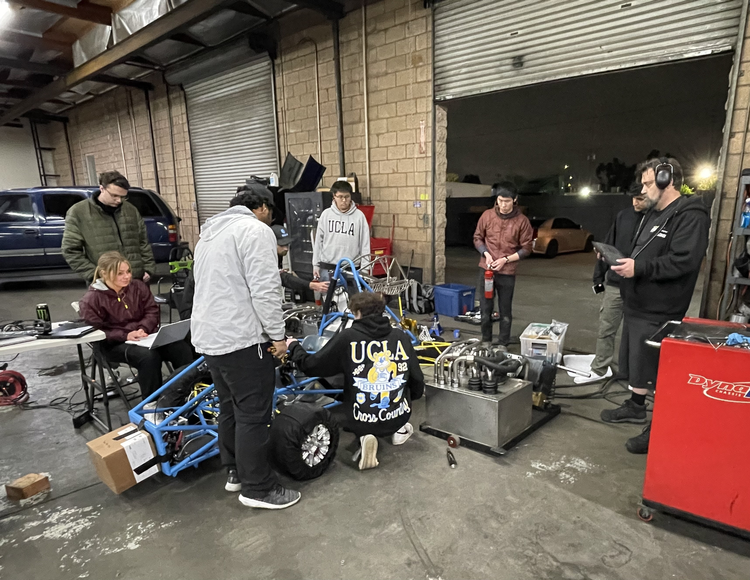
Mk. VIII being tuned on the dynamometer
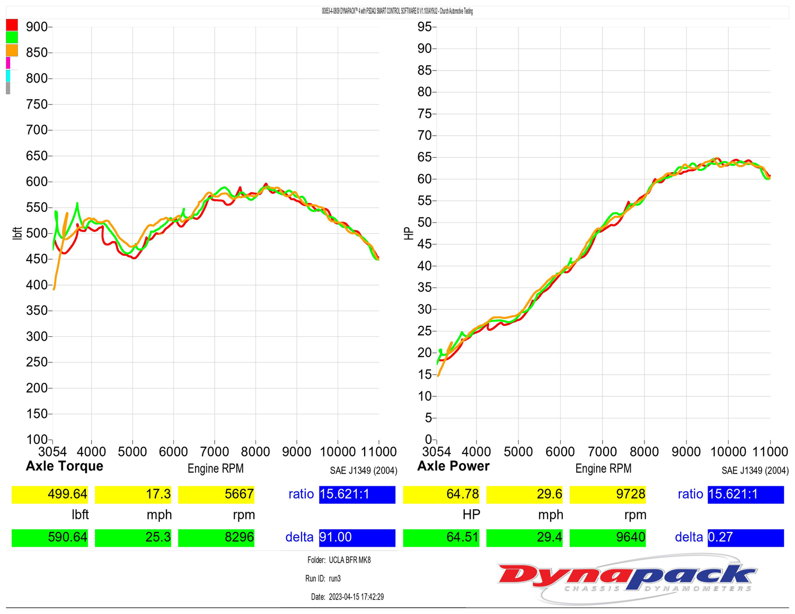
Our final tune
Mk. IX Brakes + Pedalbox
As part of the team's transition to an electric powertrain, there was a need to design a drive-by-wire system for the pedalbox that would enable precise electronic control and seamless integration with the vehicle's control systems. Additionally, a 100lb+ increase in vehicle weight mean the braking subsystem required a redesign to improve stopping power, while still reducing overall weight./p>
Primary Objectives:
Design a drive-by-wire system for the pedalbox using SOLIDWORKS, facilitating the team's transition to an electric powertrain.
Optimize the braking subsystem's performance through simulations, aiming to reduce weight while increasing stopping power.
Implementation:
I utilized SOLIDWORKS to design a drive-by-wire system for the pedalbox, incorporating linear potentiometers and ensuring seamless integration with the vehicle's control systems.
I created detailed 3D models and technical drawings of the pedalbox and brake components, facilitating accurate manufacturing and assembly.
I conducted extensive heat transfer simulations using MATLAB and ANSYS to analyze the brake rotor’s performance under various conditions.
I iteratively refined the braking subsystem design based on simulation results in ANSYS and MATLAB, striking a balance between weight reduction and performance enhancement.
The drive-by-wire system I designed using SOLIDWORKS successfully enabled precise electronic control of the pedalbox, facilitating a smooth transition to the electric powertrain. The system integrated seamlessly with the vehicle's control systems, ensuring reliable and responsive operation.
Through the optimization of the braking subsystem using MATLAB and ANSYS simulations, I achieved a 12% reduction in overall weight while simultaneously increasing stopping power by 21%. This optimization struck a balance between performance and efficiency, contributing to the vehicle's overall competitiveness.
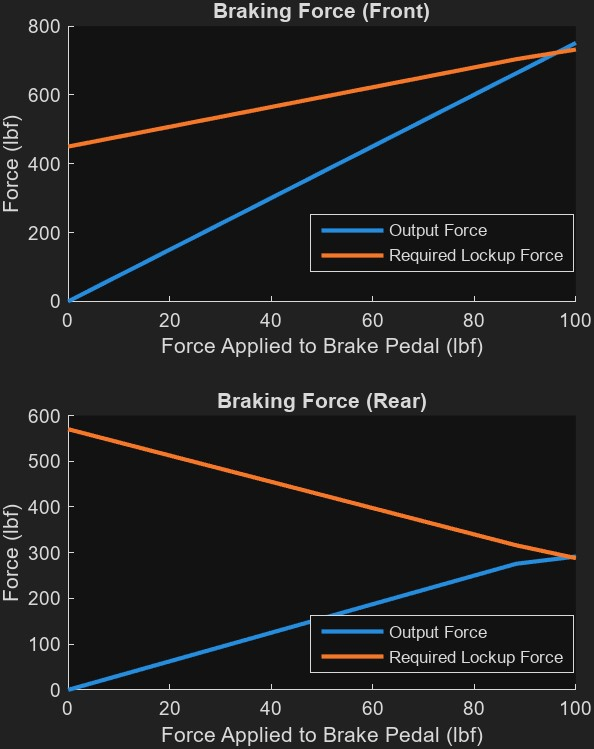
MATLAB analysis of braking forces
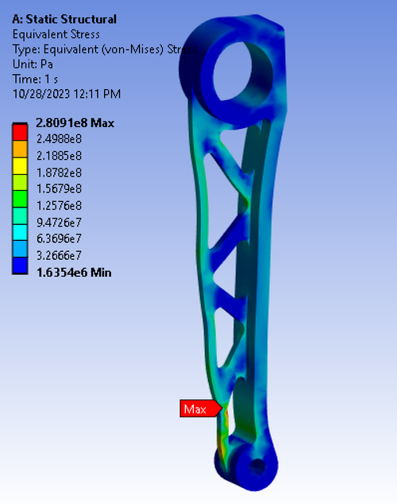
ANSYS analysis of brake pedal
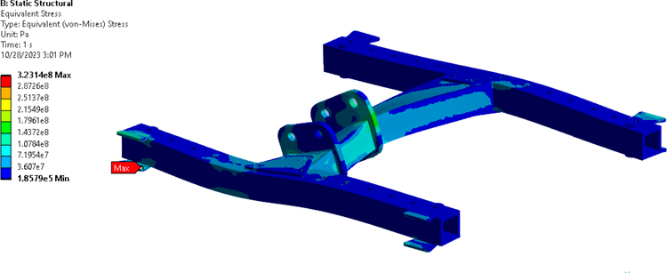
ANSYS analysis of pedalbox base
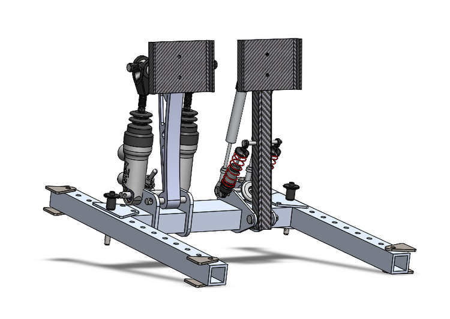
CAD for the pedalbox
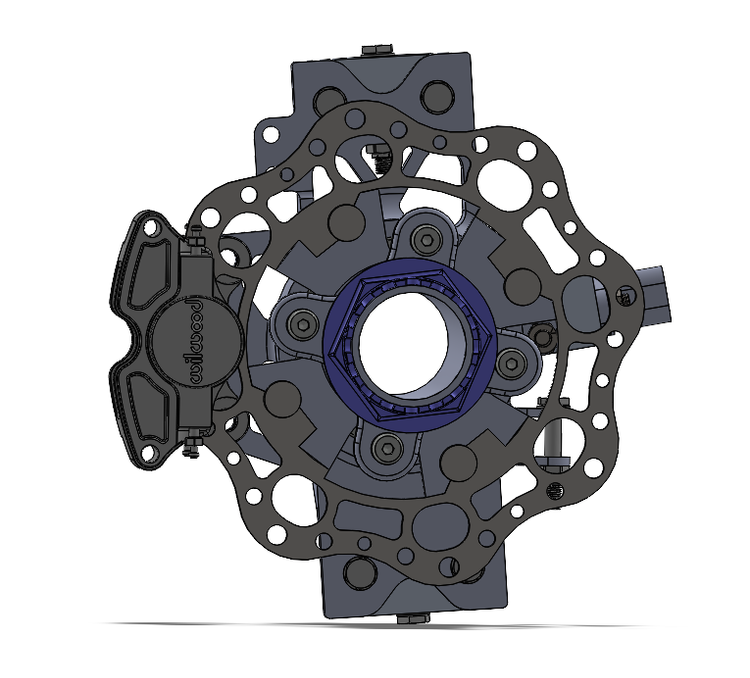
CAD for the brakes
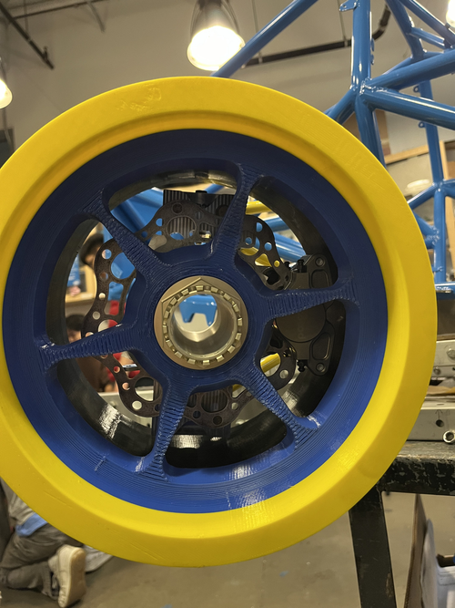
Test fitting of brakes with a 3D printed wheel
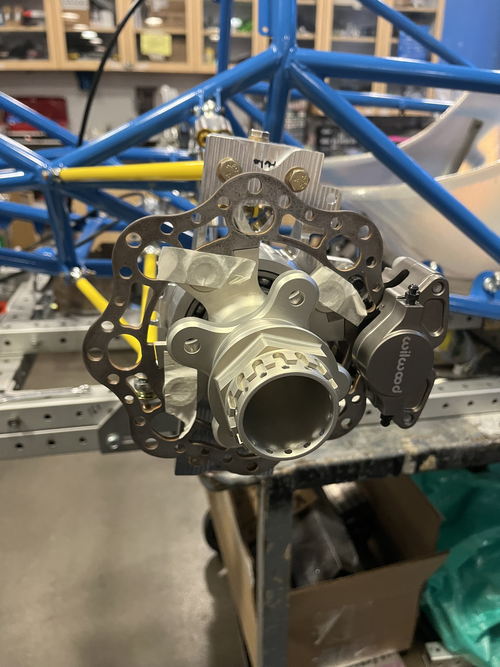
Rotor and caliper assembly
VCU Integration + Development
On Mk. IX, I was also responsible for integrating the Vehicle Control Unit (VCU) with the high voltage system and drive-by-wire system. This involved tuning the drive-by-wire system to control the motor through the VCU and ensure pedal input accuracy using the VCU's plausibility circuits. The successful integration of the VCU with the high voltage system allows the drive-by-wire system to effectively control the motor, enhancing the vehicle's performance and responsiveness. The VCU's plausibility circuit play a crucial role in verifying pedal input accuracy, ensuring the safety and reliability of the drive-by-wire system. The knowledge gained from this integration process gave us a foundation to start developing a custom VCU tailored to the team's specific needs.
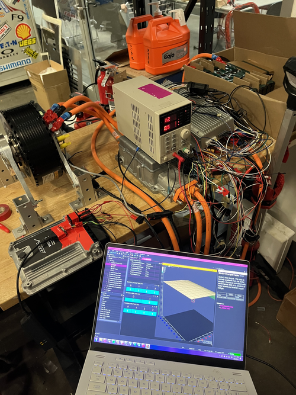
VCU test setup
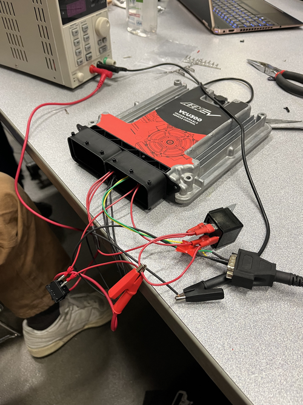
VCU testing
Software Lead
In my current role as software lead, I am overseeing the development of a custom Vehicle Control Unit (VCU), built using an STM32. I am also leading the development of custom data acquisition software, allowing sensor data from the car to be logged and viewed in real time. Additionally, I am programming the Battery Management System (BMS) that monitors our high voltage system.
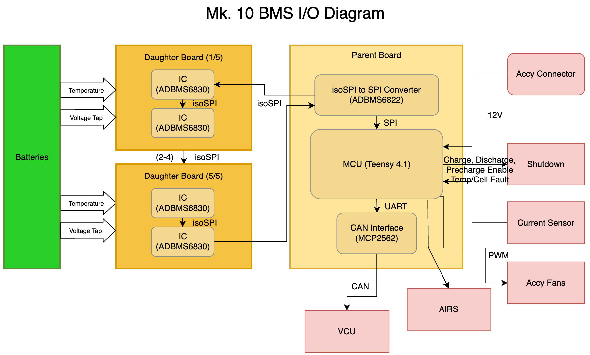
Battery Management System (BMS) interface
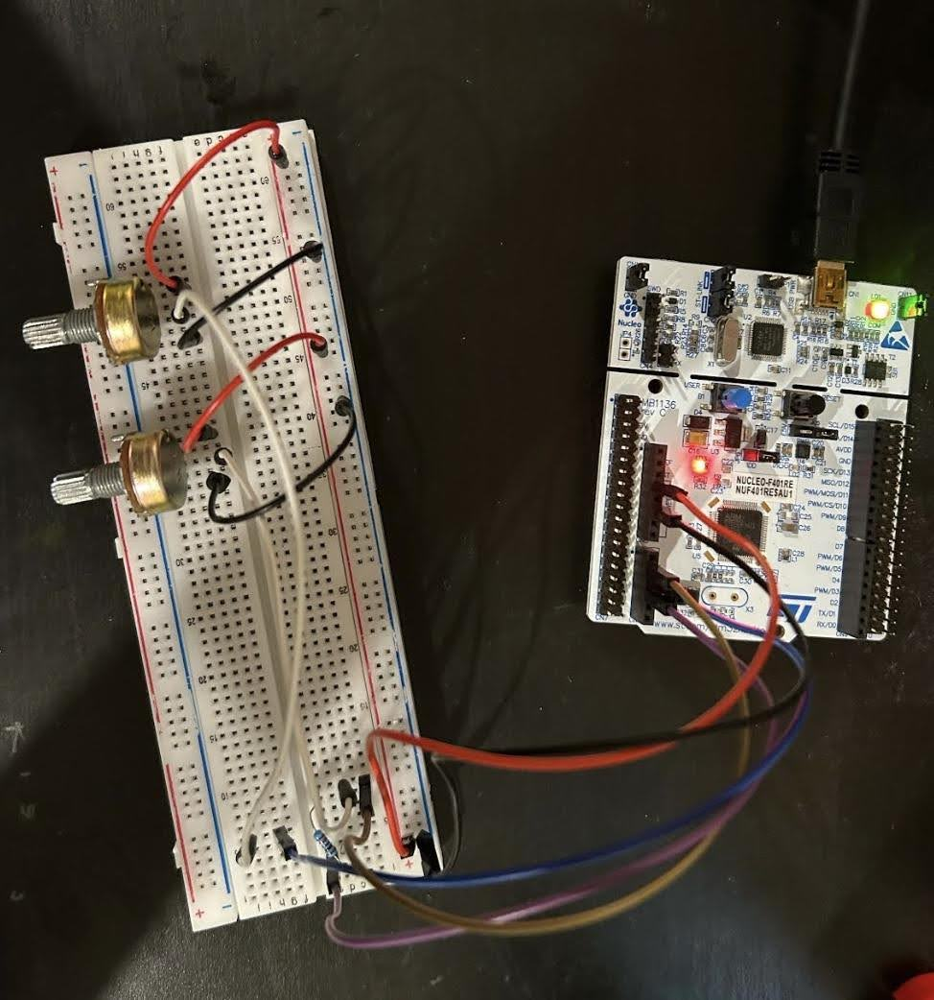
Custom Vehicle Control Unit (VCU) development